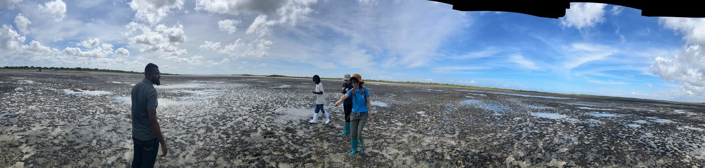
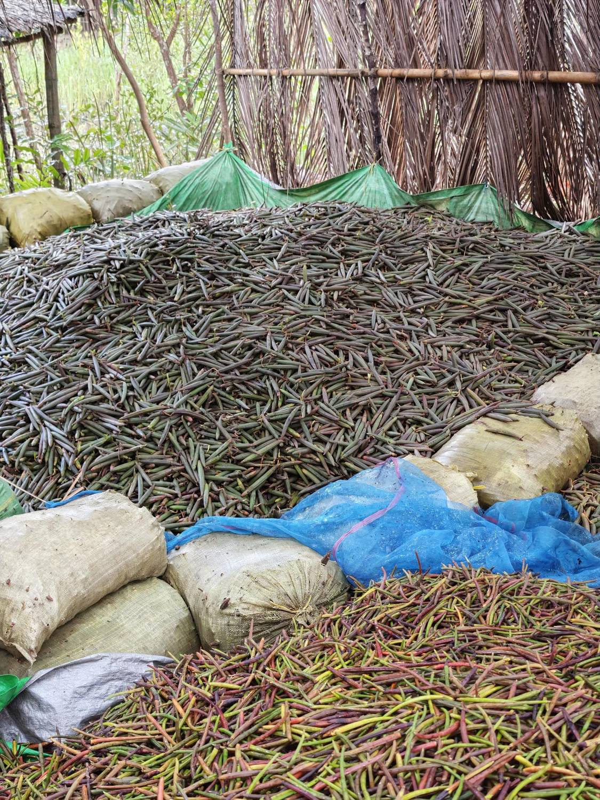
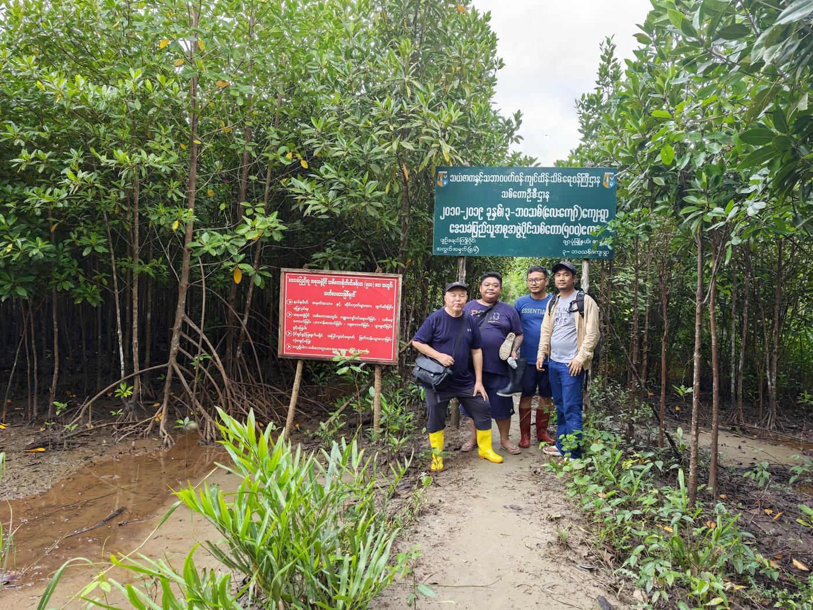

專注於碳權採購、合規減量與自然碳匯專案評估的顧問團隊。 作業範圍涵蓋東南亞與非洲。

自然碳匯各類方法學的適用性判斷與版本追蹤， 以及不同碳權標準之間的取捨。
所在國碳市場法制、土地與海域權利基礎、 社區同意程序的法定要件。
地表覆蓋判讀、林地變遷偵測、邊界與面積獨立核算， 以公開資料為主，方法可重現。
各市場對碳相關說法的管制差異， 以及永續報告與財報揭露的對應要求。


碳市場的資訊落差很大，而落差通常對買方不利。 我們的角色是把對方沒說的部分補上。
不囤貨、不賺價差。額度由供應商直接移轉給客戶，成本資訊透明。
顧問費與交易金額無關，也不收受供應商任何形式的對價。
若我方在任何環節具有其他身分，會在委任前書面說明。
本公司提供專業顧問意見，非法律、稅務或投資意見。 涉及法律效果或投資決策時，建議另行取得律師、會計師意見。
本站碳市場資料庫之資料全部來自公開來源。 我們不轉售原始資料，只做整理、交叉計算與標示。
本站資料僅供參考，不構成投資建議或對任何專案品質之背書。 原始紀錄以各登記處公告為準。